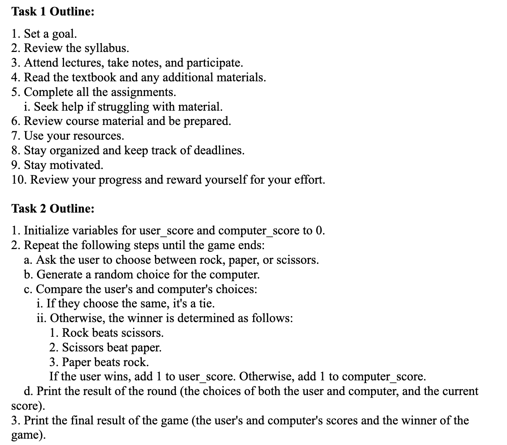

Lab 4 - Pseudocoding and Problem-solving
Challenge
To write the pseudocode of a simple computer game and turn it into comments in the lab.js.
Problems
There weren't any problems while completing this lab besides being confused about what to do for task 1, whether to write the pseudocode for multiple different tasks or to only write one.
Reflection
During this assignment we struggled with thinking of all the tasks needed in our pseudocode, making sure the details could be applied in a real life scenario but simplified into a task that is easy to understand. This lab was pretty fun since it was easier to research and write compared to the last lab where there were errors popping up for no reason.
Results

//1. Initialize variables for user_score and computer_score to 0.
//2. Repeat the following steps until the game ends:
//a. Ask the user to choose between rock, paper, or scissors.
//b. Generate a random choice for the computer.
//c. Compare the user's and computer's choices:
//i. If they choose the same, it's a tie.
//ii. Otherwise, the winner is determined as follows:
//1. Rock beats scissors.
//2. Scissors beat paper.
//3. Paper beats rock.
//If the user wins, add 1 to user_score. Otherwise, add 1 to computer_score.
//d. Print the result of the round.
//3. Print the final result of the game.